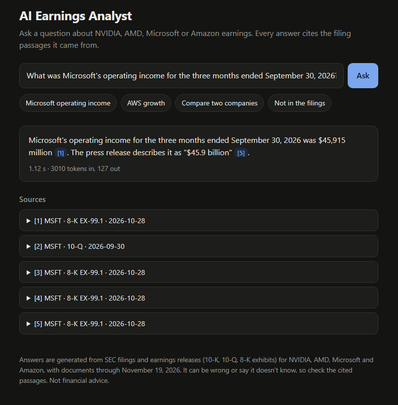

In progress
AI Earnings Analyst
A retrieval-augmented generation (RAG) research assistant for SEC filings
Ask a question about NVIDIA, AMD, Microsoft or Amazon earnings, and it answers using their SEC filings, with a citation for every number. If the filings don't cover the question, it says so instead of making something up.
I built it to learn RAG properly, which meant measuring everything. Before I kept any change, I tested it against a fixed set of questions with known answers.
- 82%
- Answerable questions answered correctly (18 of 22). Three of those had the right figure but rounded it, so a strict grader scores it at 68%. The same model without retrieval got 0%.
- 9 of 9
- Unanswerable questions correctly declined. Without retrieval, the model invented answers to 2 of 6.
- 25 of 25
- Correct whenever the right passage was in the top 5 search results.
- 1.8 s
- Average response time.
How it works and what I learned
The app downloads 40 filings (10-Ks, 10-Qs and earnings releases) from SEC EDGAR, cleans them into plain text, and splits them into about 3,400 chunks. Each chunk is embedded and stored in a Chroma vector database. When a question comes in, the app detects which companies it mentions, searches only their filings, and sends the top five passages to Claude with instructions to answer only from those passages and cite each claim.
Testing was the most interesting part. I wrote 28 questions with the exact supporting evidence for each one, including 6 that the filings can't answer. I scored the system with retrieval metrics (Recall@5 and mean reciprocal rank) and a separate model acting as a judge. Then I tested eight ways to improve retrieval, including reranking, hybrid keyword and vector search, smaller chunks, and a larger embedding model. Only one change, searching each company separately, actually helped. Most of the others made results worse.
When I looked at the failures, the search almost always found the right filing. The problem was that the chunk holding the exact number lost to a different chunk from the same filing that matched the question's wording more closely. Because of that, my next step is extracting the financial tables as structured data rather than tuning the search further.
Once tuning was done, I wrote a second set of 23 questions the system had never seen and ran it once. It answered 12 of the 20 answerable questions and declined all 3 unanswerable ones.
